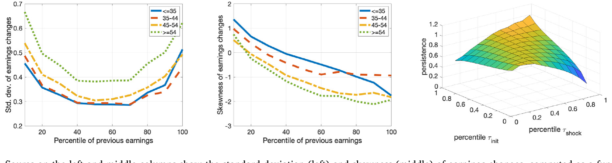
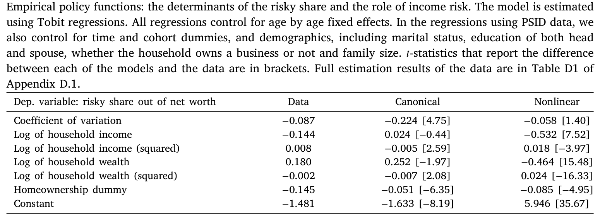
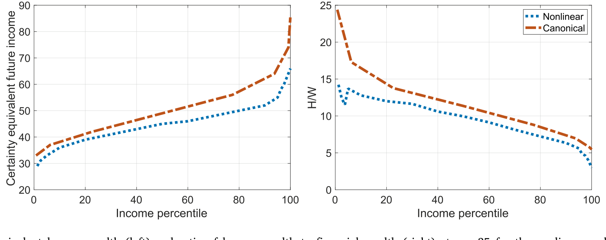
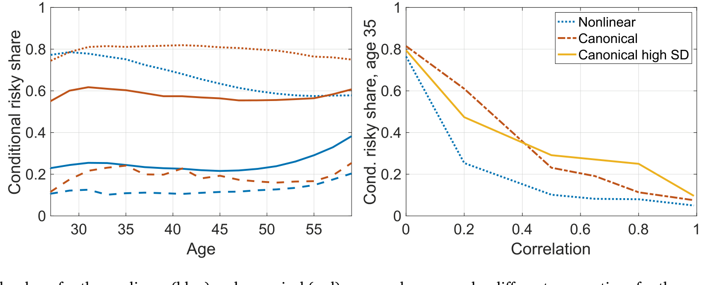
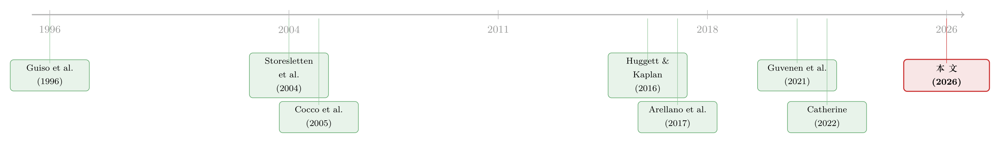

把收入风险的「丑陋一面」还给模型：风险厌恶其实没那么高
本文读的是 Gálvez & Paz-Pardo (2026, Journal of Financial Economics)：当我们把更真实、带负偏度且非线性的收入风险过程，放进一个结构估计的生命周期投资组合模型里，原本需要「高得离谱的风险厌恶」才能解释的两个老谜题——为什么很少有人参与股市、为什么参与了也只买一点点股票——突然变得不那么需要风险厌恶来背锅了。风险厌恶系数从 11.16 一路降到 6.83，每年的股市参与成本也从 390 美元降到 135 美元。换句话说，问题也许从来不在「人有多怕」，而在「我们把收入风险写得太干净」。
1 一个老问题：年轻人为什么不爱买股票
先从一个几乎写进所有金融学教科书的结论说起。
对一个 25 岁、刚开始工作的年轻人来说，他这辈子最大的一笔「资产」，并不是银行账户里的存款，而是未来几十年的劳动收入——经济学家管它叫人力财富 (human wealth)。理论上，如果这笔人力财富像一张安稳的债券，那么从分散化的角度看，年轻人理应把金融资产里绝大部分都押在高收益、高风险的股票上，去对冲掉那块「过度安全」的人力财富。生命周期投资组合理论 (life-cycle portfolio choice) 给出的标准建议，几乎是「年轻时满仓股票」。
可现实呢？现实是大多数家庭根本不碰股市；即便碰了，配置在股票上的比例也低得可怜。这就是家庭金融里那个反复被讨论的双重谜题：有限的股市参与 (limited stock market participation) 与过低的风险资产份额 (low risky share)。
理论说「该满仓」，数据说「几乎不碰」。这个缺口怎么补？
2 把「锅」甩给谁：风险厌恶，还是收入风险？
过去三十年里，整个文献其实一直在做同一件事——给标准模型「加料」，好让它生成的行为更像数据。而最顺手的那味料，就是把风险厌恶 (risk aversion) 调高。
道理很直白：人越怕风险，就越不愿买股票、买了也买得越少。于是像 Cocco, Gomes & Maenhout (2005) 这样的奠基性工作，以及后来一批匹配「有限参与」的模型（如 Fagereng et al., 2017），要复现数据里那种谨慎，往往得把相对风险厌恶系数 (coefficient of relative risk aversion, CRRA 里的 \(\gamma\)) 设到 10 上下。本文复现出来的标准模型给的估计是 11.16。
但这里有个尴尬。当微观计量学家不靠模型、而是直接用问卷去「问」人们到底有多怕风险时，得到的数字却低得多——Guiso & Sodini (2013) 综述里给出的典型值大约是 4。一边是结构模型要 11，一边是问卷调查只要 4。这中间两倍多的落差，长期以来要么被忽略，要么被一句「结构估计本来就偏高」糊弄过去。
于是一个自然的问题是：会不会风险厌恶根本不该这么高？会不会我们一直在让一个错误的「替罪羊」背锅，而真正的元凶藏在别处？
本文给出的答案是——藏在收入风险里。更准确地说，藏在我们对收入风险那个「过于干净」的假设里。
3 收入风险的真面目：偏度、非线性与年龄
要理解这篇论文，得先看清楚它跟标准做法到底在哪一步分了岔。
绝大多数生命周期模型，描述劳动收入用的是所谓标准过程 (canonical process)。把对数收入 \(y_{it}\) 拆成确定性部分和随机部分：
$$ y_{it} = f(X_{it};\theta) + \eta_{it} + \varepsilon_{it}, \quad t=1,\dots,T $$
其中持续性成分 \(\eta_{it}\) 走一个一阶自回归，加上一个暂时性冲击 \(\varepsilon_{it}\)：
$$ \eta_{it} = \rho\,\eta_{it-1} + u_{it} $$ $$ \eta_{i0}\sim N(0,\sigma_z^2),\quad u_{it}\sim N(0,\sigma_u^2),\quad \varepsilon_{it}\sim N(0,\sigma_\varepsilon^2) $$
这套写法漂亮、好估、好算，但它悄悄塞进了三条很强的假设：线性（持续成分是简单的 AR(1)）、正态（冲击对称、没有偏度）、以及年龄无关（持续性 \(\rho\) 和各阶矩都不随年龄变）。
而真实的美国家庭收入数据，恰恰把这三条假设逐一打脸。这正是 Arellano, Blundell & Bonhomme (2017)、Guvenen et al. (2021)、De Nardi et al. (2020) 这一系收入动态文献的核心发现。本文用 PSID 1999–2017 年的数据重新刻画了这幅「真面目」，如图 1 所示：收入变动的标准差（左列）随年龄上升，且沿收入分布呈 U 形——在 40 分位左右最低、70 分位往上又抬头；偏度（中列）则系统性地为负，而且越往高收入、越往高龄走，负得越厉害。

Figure 1: The figures on the left and middle columns show the standard deviation (left) and skewness (middle) of earnings changes, computed as a funct
这意味着什么？意味着对一个年纪偏大、收入中等的工人来说，他平时的收入流看上去非常平稳，可一旦遭遇某个低频但巨大的负向事件——典型如失业——就会被狠狠砸一下。这种「平时风平浪静、偶尔骤降悬崖」的形态，正是负偏度 (negative skewness) 的来源。Guvenen et al. (2014) 算过，收入变动的偏度沿收入分布的变化幅度（在 $-0.5$ 到 $-1.5$ 之间）甚至超过它在经济扩张与衰退之间的变化（中位收入者大约在 $-1.25$ 到 $-1.75$）。
更要命的是第三条——非线性的持续性（图 1 右列）。本文发现，对一个本来排名很高的家庭，一记极端负向冲击几乎可以「抹掉」他过去所有好运气的记忆：此时的持续性低到约 0.25。Arellano et al. (2017) 把这种现象叫做「微观经济灾难」(microeconomic disasters)——它和宏观灾难的区别在于，它发生得更频繁、也更容易在数据里被识别出来。
把这三件事合起来看，结论就很清楚了：标准过程系统性地低估了人们扛着的背景风险 (background risk)。而既然人力财富比我们以为的更危险，那么人们「不敢买股票」就未必是因为天生胆小，而完全可能是一种理性的避险。
4 模型：把住房、股市参与成本和收入风险装进一个生命周期框架
要把上面这个直觉变成可检验的定量结论，需要一个足够完整的结构模型。本文搭的是一个离散时间、带住房 (housing) 的生命周期投资组合选择模型，建立在 Cocco et al. (2005) 的传统之上。
人口与时点。 家庭 25 岁开始工作，面临随年龄上升的死亡概率，最迟 100 岁必死；65 岁退休、领取相当于退休时收入 70% 的公共养老金；模型一期为两年。
偏好。 家庭对非耐用品消费 \(c_t\) 和住房服务 \(h_t\) 有 Cobb–Douglas 形式的期内效用，外面再套一层 CRRA。这个效用函数是整个模型的心脏，也是 \(\gamma\)（风险厌恶）真正被估计出来的地方：
资产与股市参与成本。 家庭可以把储蓄放进无风险资产（固定回报 \(r\)）或风险股票（随机回报 \(r^s\)）。关键在于，参与股市是要花钱的——沿用 Vissing-Jorgensen (2002) 的设定，参与成本可以是一次性的进入成本 \(\kappa^{FC}\)，也可以是每期都要交的持有成本 \(\kappa^{PP}\)。这个成本，连同 \(\gamma\)，正是模型里两个最被关注的待估参数：它们俩本质上是同一件事的两种解释——人们不买股票，到底是因为「怕」（\(\gamma\) 高），还是因为「嫌麻烦/有门槛」（\(\kappa\) 高）？把这两者分开来量，是这类研究的关键追求（关于这个「拆解」思路，可参见《94% 的人其实都想买股票——把「风险厌恶」和「麻烦」分开来量》）。
收入与股市的相关性。 模型还允许个体的持续性收入冲击和股市回报之间存在相关：
$$ r^s_{it+1} = (1-\tilde\lambda_\eta)\,r^s_{t+1} + \tilde\lambda_\eta\,\eta^{shock}_{it+1} $$
其中 \(\tilde\lambda_\eta\) 刻画了这种相关，基准设为对应相关系数 0.2。这一项很重要：它决定了人力财富到底有多「像股票」——相关越强，人力财富就越像一笔已经持有的隐性股票头寸，理性家庭就越该在金融账户里少配股票。
至于住房这块，本文做了一系列标准校准：交易成本是房价的 5%、租金是房价的 2.5%、最低首付 \(\phi_H=20\%\)、中等户型房价是平均收入的 5 倍。房价在个体层面有风险（标准差 0.1），但本文抽象掉了全国性的房价波动。（关于「租还是买」如何深刻影响生命周期资产配置，可参见《半套房子：当「租还是买」不再是单选题》。）
5 识别策略：把两套收入过程「喂」进同一个模型
这里要强调，本文的「识别」不是双重差分或断点那种准实验，而是结构估计 (structural estimation) 的路数——具体说是间接推断 (indirect inference) / 模拟矩方法 (simulated method of moments, SMM)。
它的精妙之处在于一个受控对比：把标准过程和非线性过程分别先用 PSID 估出来，再各自作为外生输入，喂进同一个生命周期模型，让模型去匹配同一组刻画美国家庭储蓄与投资行为的矩。这些被瞄准 (targeted) 的矩，来自 SCF 与 PSID 的丰富横截面：股市参与率及其动态、财富收入比、自有住房率、股票组合份额，等等。两次估计唯一的区别，就是「收入风险长什么样」。于是，估出来的 \(\gamma\) 和 \(\kappa\) 的差异，可以干净地归因于收入过程的差异。
更有说服力的是，本文还检验了一批没有被瞄准 (untargeted) 的特征——比如财富、风险份额、参与率、住房份额各自的生命周期轮廓——看模型能不能「外推」对。这相当于结构估计版本的「样本外检验」，也是判断模型是否抓住了真实机制、而非过度拟合的关键。
6 主要结果：风险厌恶从 11 降到 7
现在可以揭晓那个核心反转了。
把更真实的非线性收入过程喂进去之后，要复现「有限参与 + 低风险份额」这同一组事实，模型需要的风险厌恶系数从标准过程下的 11.16，骤降到 6.83。

Table 3
这个 6.83 意味着什么？它一下子把结构模型和问卷调查那两个长期对不上的世界拉近了——离 Guiso & Sodini (2013) 报告的问卷值 4 近了一大截。与此同时，每年的股市参与成本也从标准过程的 390 美元，降到非线性过程的 135 美元。也就是说，一旦你承认人们扛的背景风险本就更大，你就不再需要用「人特别怕」或「门槛特别高」来硬凑出他们的谨慎——是收入风险本身替风险厌恶背了大半的锅。
为什么会这样？机制全在「人力财富」这四个字上。如图 2 所示，在非线性过程下，35 岁时的确定性等价人力财富 (certainty-equivalent human wealth) 明显低于标准过程——因为负偏度让人们对「可能挨一记大的负向冲击」充满戒备，他们会主动调低对未来收入的估值，并提高预防性储蓄 (precautionary saving)。人力财富一旦变「毛」，它对股票的替代作用就增强，金融账户里自然就该少配股票。

Figure 2: Certainty-equivalent human wealth (left) and ratio of human wealth to financial wealth (right) at age 35 for the nonlinear and canonical ear
本文进一步指出，收入过程的每一层灵活性都不可或缺：年龄依赖让模型认识到老年工人仍面临低频但巨大的负向风险；非正态（负偏度）让人们想为「挨大的」上保险；非线性则让「高收入者反而面临更大收入风险」成为可能——结果是收入风险沿财富分布内生地变化。这就解释了一个标准模型死活生不出来的事实：在标准过程里，股票最优份额永远随净值收入比下降；可无论在非线性过程还是真实数据里，都不是这样。
7 反转之后：投资建议、(100−age) 法则与年龄的力量
如果上面的结论成立，那么它对「该怎么投」这件事的含义就相当具体了。
本文举了个很有画面感的例子：一个 50 岁、自有住房、财富不算多（20 万美元）、收入中位的工人。标准模型会建议他把金融组合的约 40% 投进股票；而更真实的非线性过程则提醒：这位老兄随时可能挨一记不小的收入冲击，于是建议一个更保守的策略——只投 20%。整整砍掉一半。
也正因如此，那条被无数理财顾问挂在嘴边、却常被学院派嗤之以鼻的拇指法则——「把 \((100-age)\%\) 的钱投进风险资产」——在本文里反而重获支持：一旦你把晚年收入那相对更大的标准差和负偏度考虑进来，这条简单法则竟意外地接近最优。
图 8 把这层意思画得很清楚：在非线性过程下，风险份额随年龄下降的斜率，比标准过程更陡、也更贴合数据，尤其在面临更大负偏度的老年工人身上。

Figure 8: Left: conditional risky share for the nonlinear (blue) and canonical (red) process, by age, under different assumptions for the correlation
不过本文也诚实地交代了 CRRA 偏好的一个局限：无论哪套收入过程，都复现不出 SCF 数据里那条随收入上升的风险份额曲线（这通常要靠非位似偏好，如 Wachter & Yogo (2010)）。但即便如此，非线性过程在解释老年工人的组合选择上，仍明显胜过标准过程。
8 文献脉络
把这篇论文放回它所在的坐标系，会更容易看清它的贡献到底新在哪。
故事的两条河流，最终在这里汇合。
第一条河是生命周期投资组合选择。早期 Guiso, Jappelli & Terlizzese (1996) 就指出收入风险、借贷约束会塑造组合选择；Viceira (2001) 与 Huggett & Kaplan (2016) 把「不可交易的劳动收入」「人力资本中有多大一块是股票」讲清楚；而真正的奠基之作是 Cocco, Gomes & Maenhout (2005)——此后一系工作分别加入习惯形成、收入波动、个人灾难风险等元素，但它们普遍要靠很高的风险厌恶才能匹配数据。
第二条河是收入动态。Storesletten, Telmer & Yaron (2004) 量化了特异性收入风险的巨大福利成本；Guvenen et al. (2014) 揭示收入风险的逆周期性；而 Arellano, Blundell & Bonhomme (2017) 与 Guvenen et al. (2021) 则用半参数/分位数的方法，系统地证明真实收入是非线性、非正态、年龄依赖的。

这两条河此前各流各的：组合选择文献用着「太干净」的收入过程，收入动态文献则很少追问它对资产配置意味着什么。而 Catherine (2022)、Catherine et al. (2024)、Shen (2024) 已经开始强调收入风险的逆周期性对家庭风险承担的影响——他们关注的是宏观/商业周期维度。本文的位置恰恰在此分岔：它把 Arellano et al. (2017) 那套灵活的、对数据「不预设结构」的收入过程，接进 Cocco et al. (2005) 式的结构估计框架，并刻意聚焦于生命周期与收入分布这一横截面维度，而非商业周期。换句话说，它是第一次把「收入风险的丑陋一面」完整地、结构化地还给了投资组合模型——并发现，这一还，风险厌恶就「正常」了。
9 评论与延伸（Q&A + 研究方向）
(a) 几个可能的疑问
Q：风险厌恶从 11 降到 7，这个降幅到底算不算「大新闻」？
算。关键不在绝对数字，而在它跨过了一道坎：
6.83第一次把结构估计的 \(\gamma\) 拉到问卷调查值（约 4）的同一个量级附近。长期以来「模型要 10+、问卷只要 4」的尴尬落差，被收入风险这一个变量解释掉了大半——这说明此前的高 \(\gamma\) 很可能是设定误差 (misspecification) 的产物，而非真实偏好。
Q：非线性过程会不会只是因为参数更多，所以「拟合得更好」？
这是结构估计最常见的质疑。本文的回应是那批未被瞄准的矩：财富、风险份额、参与率、住房份额的生命周期轮廓，模型并没有拿去校准，却能外推对。过度拟合通常在样本外会露馅，而这里没有，这就把「单纯因为参数多」的解释削弱了不少。
Q：负偏度是怎么具体压低股票份额的？直觉是什么？
核心是人力财富的确定性等价值被压低了。负偏度意味着「小概率挨一记大的」，规避这种尾部损失的人会调低对未来收入的估值、加大预防性储蓄，于是人力财富对股票的「隐性替代」减弱、对安全资产的需求上升——金融账户里就更不敢配股票。图 2 量化了这块估值的缺口。
Q：为什么强调生命周期/横截面，而不是像 Catherine 那一系那样讲商业周期？
因为数据告诉他们，横截面的异质性更大。Guvenen et al. (2014) 的数字很说明问题：收入变动偏度沿收入分布的变化（$-0.5$ 到 $-1.5$）比它在扩张与衰退之间的变化更大。既然主要的风险异质性藏在「人和人之间、年龄和年龄之间」，那就应该优先建模这一维度。
Q：收入和股市回报的相关性设成 0.2，会不会太随意、太关键？
这是个合理的担忧，因为这个相关直接决定人力财富「有多像股票」。本文的处理是：参照 Huggett & Kaplan (2016)——在风险厌恶约为 6（接近本文估计）时，人力资本贴现总值里约有 20% 等价于一笔多头股票头寸——来锚定这个数。他们也讨论了实证相关常常低且难测（Davis & Willen, 2014）的事实，并做了稳健性。但坦白说，这仍是个校准而非估计的参数，是结论的一个软肋。
Q：CRRA 复现不出「风险份额随收入上升」，这算硬伤吗？
算一个诚实的局限，但不致命。那条上升曲线通常需要非位似偏好（Wachter & Yogo, 2010）才能生成，本文没走这条路。它的贡献不在于「全对」，而在于：即便守着最朴素的 CRRA，仅靠把收入风险做对，就能在老年工人这一块显著改善对组合选择的解释。
(b) 几个可能的研究问题与提案
1. 把「非线性收入风险」接到公司债/信用市场的家庭参与上
【经济故事】本文讲的是「股票 vs 安全资产」。但在收益与风险之间，公司债是个被忽略的中间层。负偏度更高、更怕尾部损失的家庭，理论上应该更偏好信用债而非股票——公司债的回报分布本身就带左偏，和负偏的人力财富叠加会怎样？这可能解释为何某些人群「不碰股票却买债基」。 【可行性】中。收入过程可直接复用 Arellano et al. (2017)；难点在于家庭层面的债券持有数据较粗（SCF 能区分债券类别但样本有限），且要给模型加一类风险资产，计算成本上升。
2. 外资持有人结构如何改变「人力财富—金融资产」的相关性
【经济故事】本文把收入与股市回报的相关 \(\tilde\lambda_\eta\) 当成校准常数。但对一个本国劳动者，如果其所在行业被外资大量持有，本地收入冲击与（外资主导定价的）股价之间的相关结构可能不同于本土投资者主导的市场——这会改变人力财富的「股票属性」，进而改变最优配置。 【可行性】中偏低。需要把行业层面的外资持股与个体收入面板匹配，识别上要处理外资进入的内生性；数据可得（机构持股 + 行业收入），但匹配到个人收入面板很难，识别需要外资进入的外生冲击。
3. 把流动性风险加进「背景风险」清单
【经济故事】本文把背景风险锁定在劳动收入上。但家庭还面临资产端的流动性风险——尤其是住房和某些债券。如果晚年收入负偏度高的家庭同时持有流动性差的资产，二者叠加可能进一步压低最优风险份额。一个自然的问题是：流动性风险和收入负偏度，谁对「有限参与」的解释力更强？ 【可行性】中。模型上可在本文框架里给风险资产加一个流动性折价/抛售冲击；识别可借助市场流动性事件作为外生变动。挑战在于把家庭层面的资产流动性敞口测准。
4. 用本文框架重估「最优默认养老金配置」
【经济故事】很多国家的默认养老金采用目标日期基金 (target-date fund)，其玻璃滑道 (glide path) 基本就是 \((100-age)\%\) 的工程化版本。本文恰好为这条经验法则提供了理论支撑。那么，对收入负偏度更高的人群（如蓝领、高龄），默认滑道是否应当更陡？ 【可行性】高。这几乎是本文模型的直接政策延伸，数据（按职业/收入分组的 PSID）现成，反事实模拟即可，是很 doable 的一篇政策向论文。
最后是我作为评述者的判断。
这篇论文最漂亮的地方，是用一个「受控变量」式的结构对比，把家庭金融里一个长期被风险厌恶掩盖的问题翻了出来：我们用了几十年的高 \(\gamma\)，很可能只是「收入风险被写得太干净」的影子。它的贡献既扎实又克制——没有引入花哨的非位似偏好或新的行为假设，只是把收入过程换成数据真正长的样子，就让 \(\gamma\) 和参与成本同时回落到可信区间，还顺手为 \((100-age)\%\) 这条草根法则正了名。
对识别，我最大的保留在于那个被校准死的收入—股市相关参数 \(\tilde\lambda_\eta=0.2\)：它直接决定人力财富的「股票含量」，却没有被一并估计，而是借 Huggett & Kaplan (2016) 锚定。若这个相关在不同人群间异质（很可能如此），结论的量级会随之松动。其次，全文是局部均衡，房价的全国性波动被抽象掉，退休后无收入风险也是个偏强的简化。
后续我最想看到的，是把这套「真实收入风险」推到信用市场和外资持有人结构上去——本文已经证明，把风险写对，比把偏好调高更重要；那么在公司债、流动性、跨境持有这些维度上，是不是也藏着同样被「风险厌恶」错背的锅？这是个值得一追的方向。
参考文献
- Arellano, Manuel, Blundell, Richard, Bonhomme, Stéphane (2017). Earnings and consumption dynamics: A nonlinear panel data framework. Econometrica 85(3), 693–734.
- Catherine, Sylvain (2022). Countercyclical labor income risk and portfolio choices over the life cycle. Review of Financial Studies.
- Cocco, João F., Gomes, Francisco J., Maenhout, Pascal J. (2005). Consumption and portfolio choice over the life cycle. Review of Financial Studies 18(2), 491–533.
- De Nardi, Mariacristina, Fella, Giulio, Paz-Pardo, Gonzalo (2020). Nonlinear household earnings dynamics, self-insurance, and welfare. Journal of the European Economic Association 18(2), 890–926.
- Gálvez, Julio, Paz-Pardo, Gonzalo (2026). Richer earnings dynamics, consumption and portfolio choice over the life cycle. Journal of Financial Economics 176, 104206.
- Guiso, Luigi, Jappelli, Tullio, Terlizzese, Daniele (1996). Income risk, borrowing constraints, and portfolio choice. American Economic Review 86, 158–172.
- Guiso, Luigi, Sodini, Paolo (2013). Household finance: An emerging field. In Handbook of the Economics of Finance, Vol. 2, Elsevier, 1397–1532.
- Guvenen, Fatih, Karahan, Fatih, Ozkan, Serdar, Song, Jae (2021). What do data on millions of US workers reveal about lifecycle earnings dynamics? Econometrica 89(5), 2303–2339.
- Guvenen, Fatih, Ozkan, Serdar, Song, Jae (2014). The nature of countercyclical income risk. Journal of Political Economy 122(3), 621–660.
- Huggett, Mark, Kaplan, Greg (2016). How large is the stock component of human capital? Review of Economic Dynamics 22, 21–51.
- Storesletten, Kjetil, Telmer, Christopher I., Yaron, Amir (2004). Consumption and risk sharing over the life cycle. Journal of Monetary Economics 51(3), 609–633.
- Viceira, Luis M. (2001). Optimal portfolio choice for long-horizon investors with nontradable labor income. Journal of Finance 56(2), 433–470.
- Vissing-Jorgensen, Annette (2002). Towards an explanation of household portfolio choice heterogeneity: Nonfinancial income and participation cost structures. NBER Working Paper.
- Wachter, Jessica A., Yogo, Motohiro (2010). Why do household portfolio shares rise in wealth? Review of Financial Studies 23(11), 3929–3965.